Hi! My name is Lily Dykstra. I am a sophomore at the University of Colorado Boulder. I major in Creative Technology and Design in the School of Engineering with a minor in Mathematics.
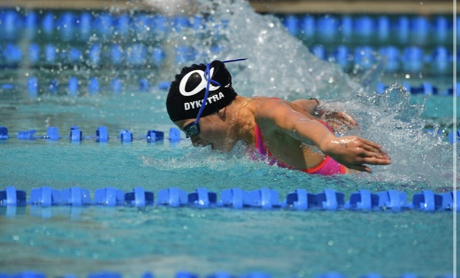 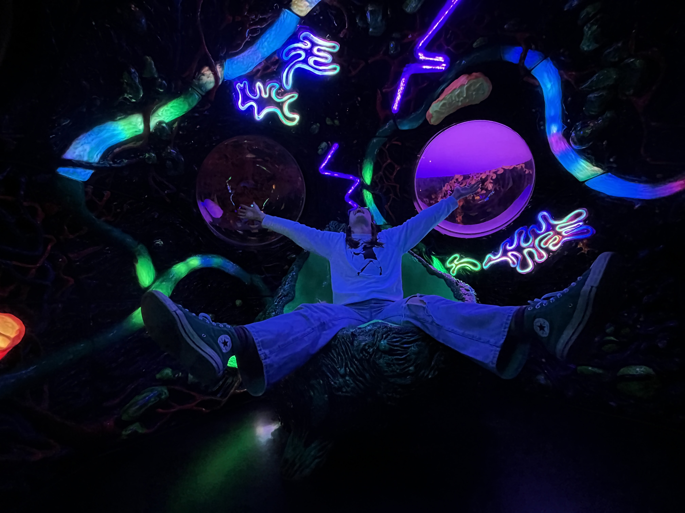 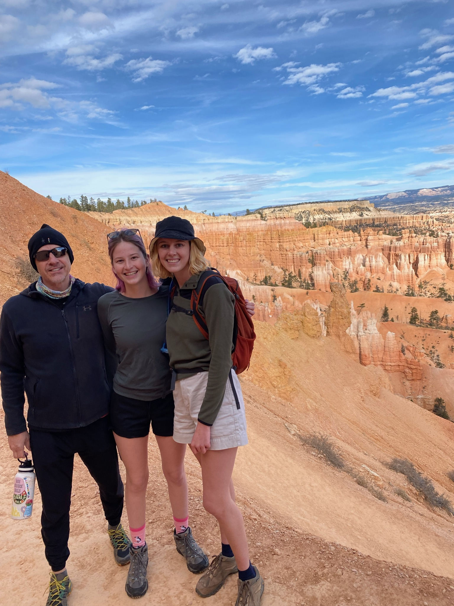
 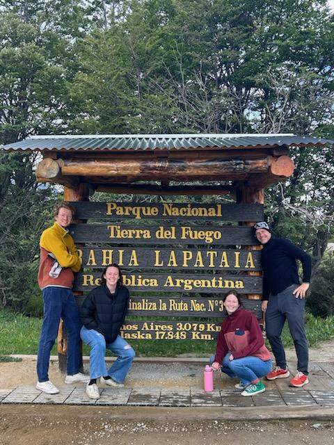
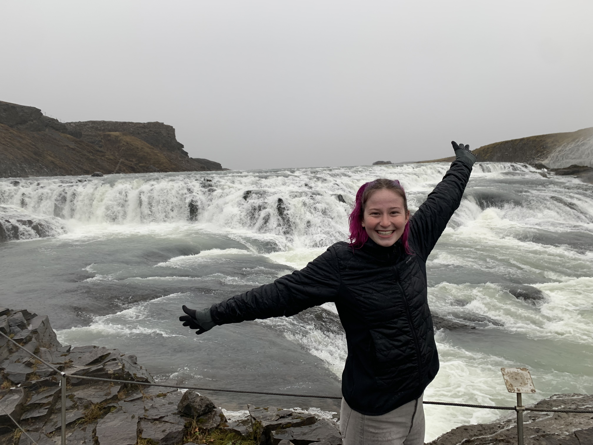
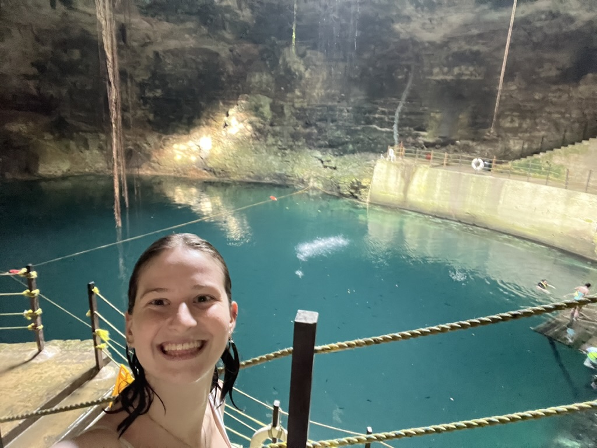
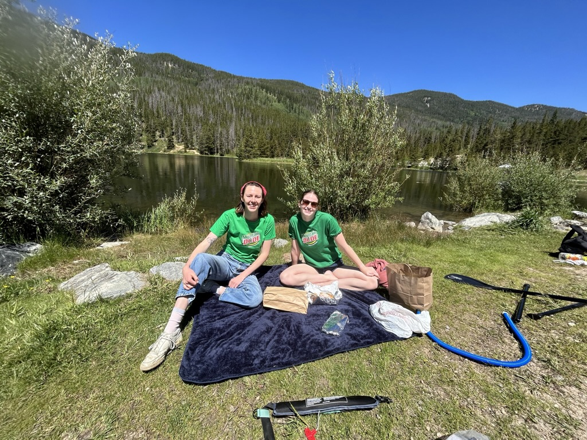
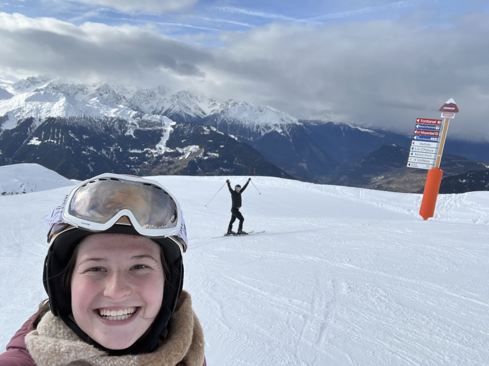
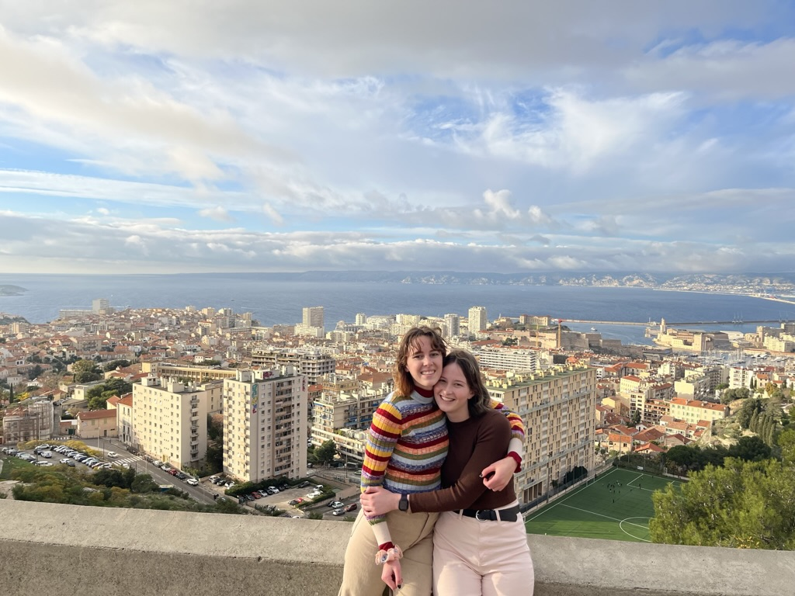
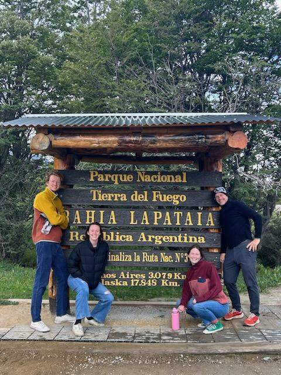
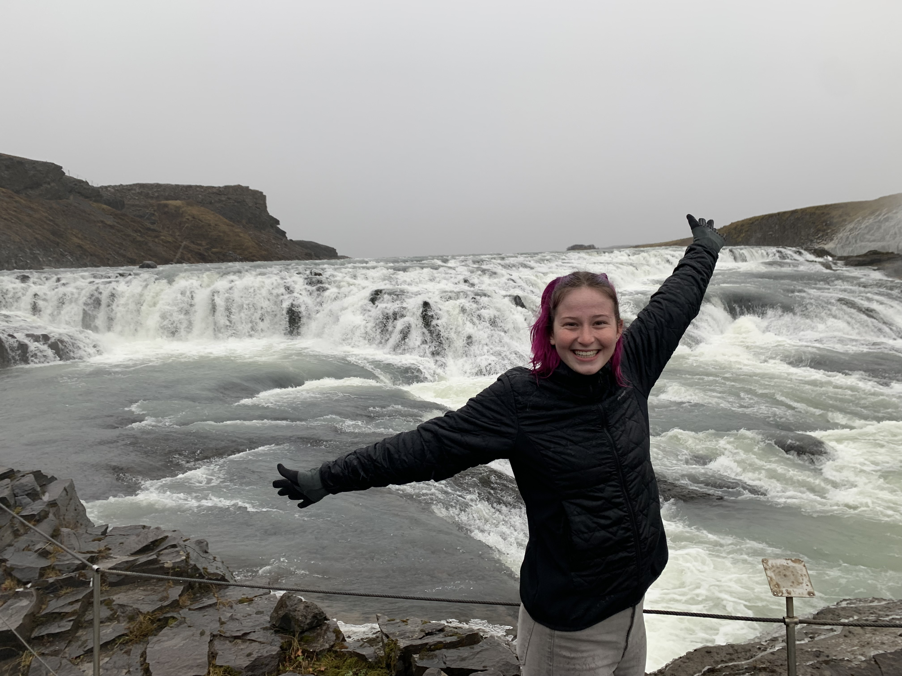
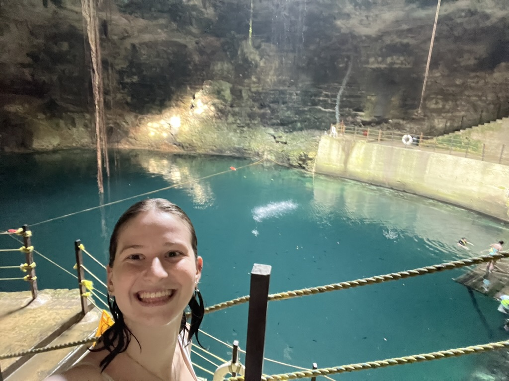
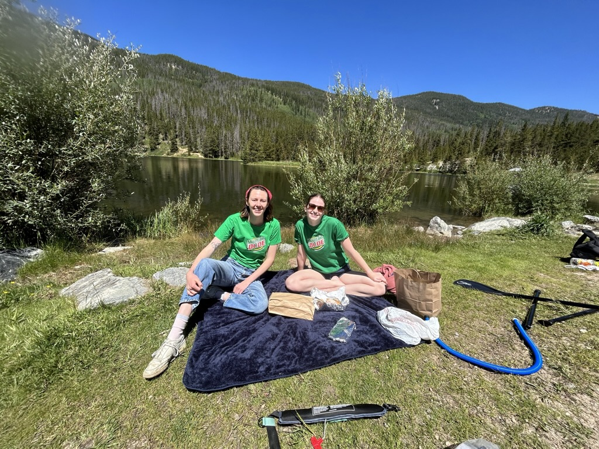
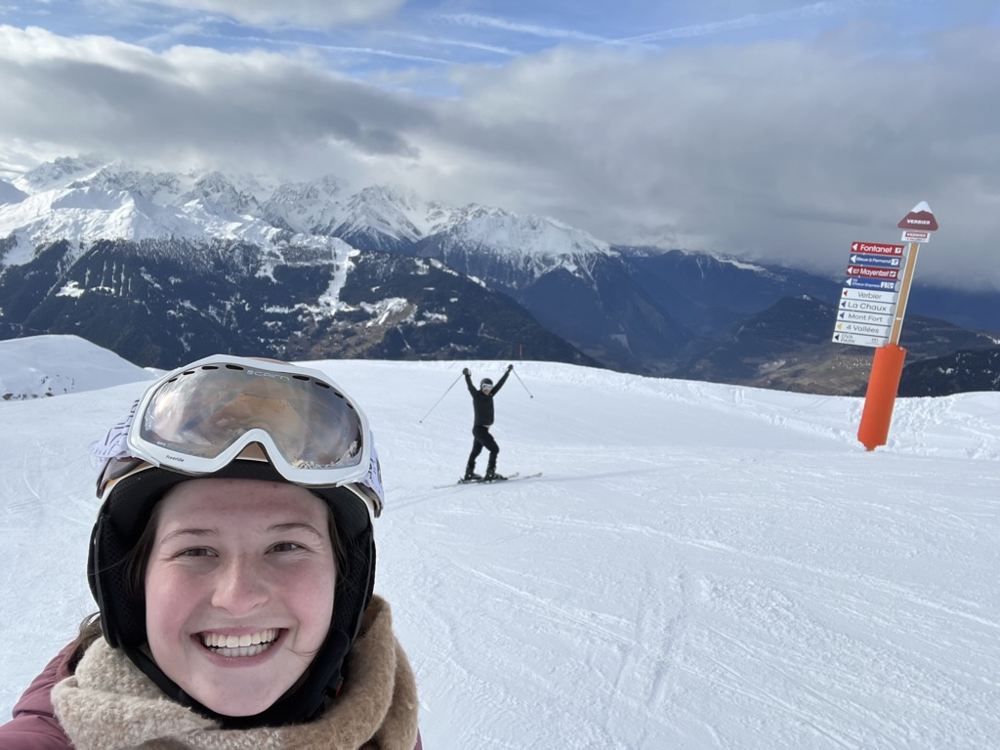
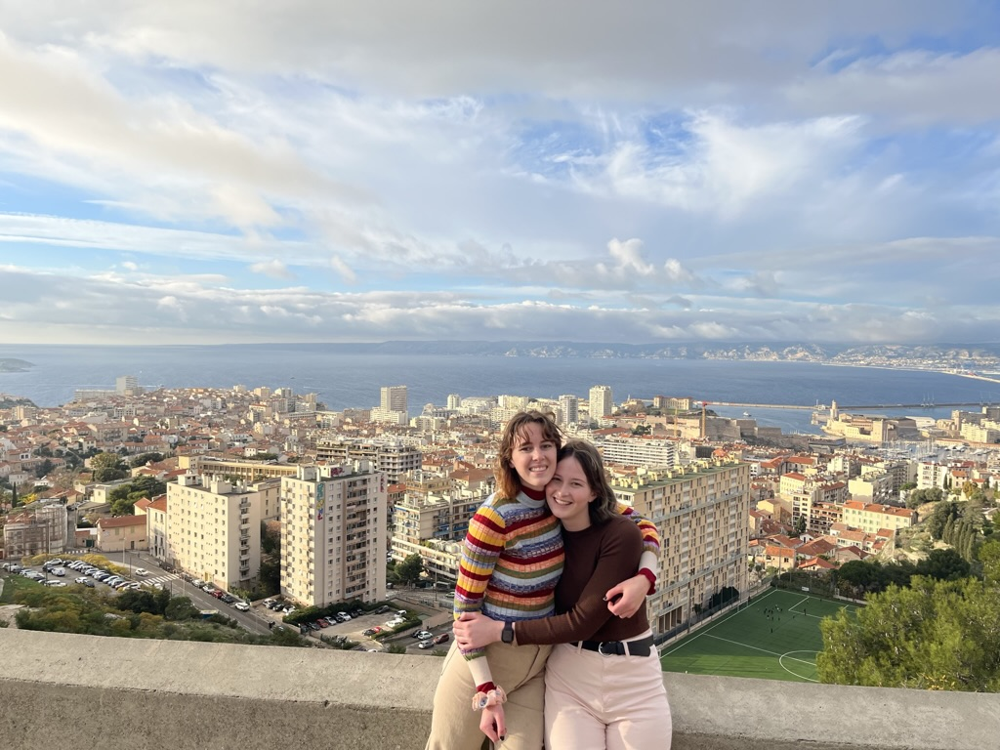
Personal:
A little bit about me! One of my favorite things to do is create. I have been sewing for the past 4 years. I will sew clothes, bags, trinkets, and any pattern I can get my hands on. My main goal is to be as sustainble as possible. My favorite thing to make are patchwork bags. I use denim scraps from old jeans and patch them together in random or intentional designs.
Another favorite thing of mine is swimming! I grew up near the beach in Los Angeles and to this day will go in the water everytime I return, even if it is a polar plunge. I also grew up as a competitive swimmer so even though I have retired from the cometitive side, I am on the club swim team at CU Boulder for fun.
I also love traveling! I am extremely lucky to have grown up in a family that values seeing the world and getting experiences. Most recently, my family and I went to Argentina to visit Buenos Aires and Tierra del Fuego National Park, and Columbia to visit Bogota. I have also had the opportunity to study abroad multiple times. I graduated high school a year early, so I decided to travel and study abroad. During this time I studied Spanish Language and Culture in Seville, Spain; LGTBQ+ Youth and Activism in Amsterdam, Netherlands; and the summer after my freshman year of college I studied Spanish Language and Mayan Culture in Merida, Mexico.
Professional:
Within my time at CU Boulder I have had the opportunity to study a variety of topics such as: web design, graphic design, photography, circuits, prototyping, principles of design, and much more. Within these opportunities I have learned on programs such as: Adobe Creative Cloud, Figma, programming languages (Python, HTML, CSS, JS), CAD Modeling (Rhino, SketchUp)
I am currently a Learning Assistant with the Atlas Institute at CU Boulder assisting with our Image class. In this class we teach the principles of photography, animation, and VR/AR. I help students with the basics of Adobe Creative Cloud platforms, such as Photoshop and Lightroom, and HTML during our AR/VR unit. Additionally, I work as a mathematics tutor in different levels of calculus.